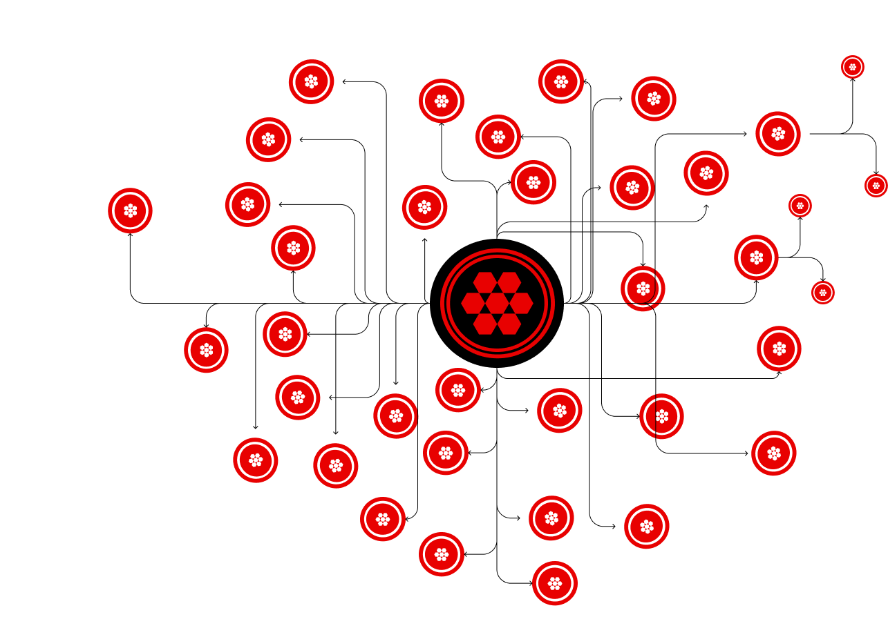

Working hackathon prototype · 5-day sprint
Neo Sapiens — making a swarm of AI agents readable.
In five days, our team built a platform that creates specialist agents, breaks a complex request into tasks, and shows the agents collaborating in real time. I led the interface design and the story we presented to judges.
